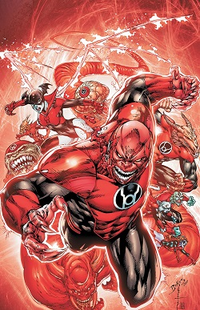

The redlanterns started out as terriost called the five inversions. They wanted vegence after there sector, sector 666 was wrongfully destroyed amd they were the only surviors. So they formed the Five inversions using magic fueled by rage they regined of terror across the galaxy until they were captureed and sent back to there homeworld. There the five inversions's leader Asto's killed the other four memebers and used there blood to create the Red lantern central battery and becoming the first red lanntern. There Lanter oath " With blood and rage of crimson red, Ripped from a corpse so freshly dead, Together with our hellish hate, We'll burn you all--that is your fate!"
 Here is a orange lantern page. Here is a Red lantern page. Here is a green lantern page. Here is a indigo lantern page. Here is a Blue lantern page. Here is a sinestro corp page. Here is a sinestro corp page.